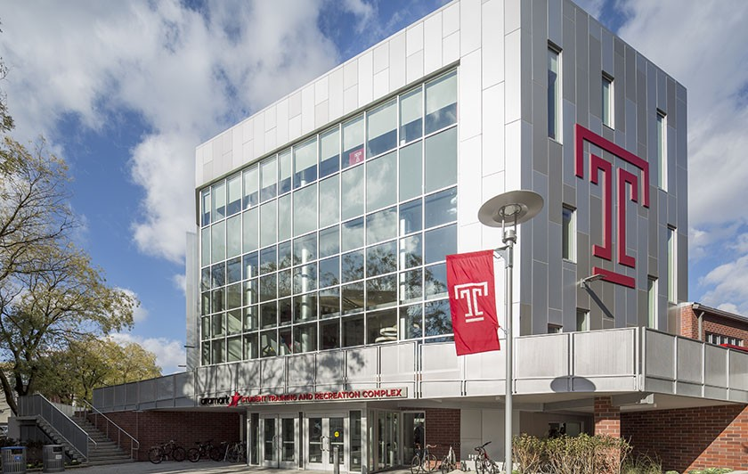
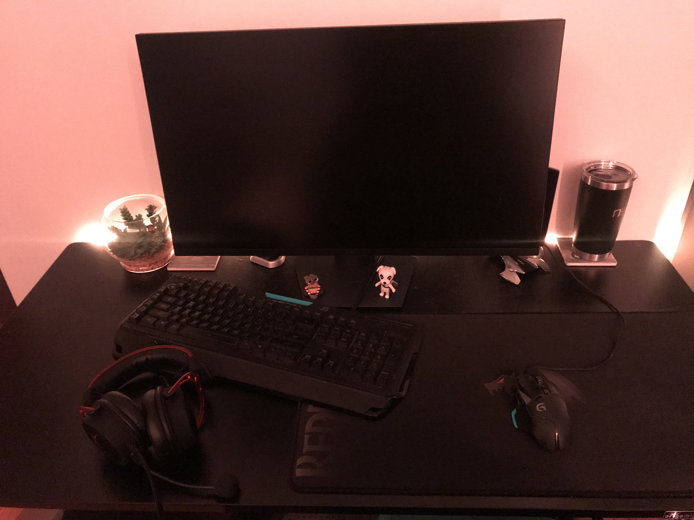

I started off my college career at Bucks County Community College as a Computer Science Major. While I was there, I decided to switch my major to Information Science and Technology. After a total of two years, I applied to Temple University and was accepted. I have now been at Temple for a year and a half. I am expected to graduate in 2020. In the mean-time, I have worked to secure an internship and build my professional skills.
My main hobby is gaming. I was gifted a computer for Christmas about 6 years ago by my parents and have been playing ever since. I periodically upgrade my computer with new components. I find that part as fun and interesting and actually as using the computer. Besides this, I spend the majority of my free time with my girlfriend who goes to Temple University as well.
